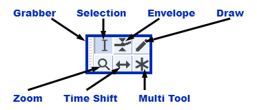

Tools Toolbar
- 
Previous / Next Shortcuts A Extra D Extra
- A Extra This shortcut cycles backwards selecting each tool in turn, returning to the Multi tool after the Selection tool
- D Extra This shortcut cycles forwards also selecting each tool in turn.
| Note carefully that these two shortcuts will only be available if you select the Full set of shortcuts in Keyboard Preferences. They are not available in the default Standard set of shortcuts. |
Selection F1
Click to select a start point for audio playback, or click and drag to select a range of audio to play or edit. You can also create a selection region between two points by clicking at one point, then holding down Shift while left-clicking at the other point.
 Envelope F2
Envelope F2
Allows smooth volume changes to be made over the length of a track by means of embedded volume "control points". Click in the track to create a control point, then set the volume of that point by dragging one of its four vertically arranged "handles". When you create other control points at different levels, a smooth curve is interpolated between them. Dragging either the top or bottom handle ensures you can never distort the track by dragging outside its original volume envelope. Dragging an inner handle allows you to amplify a quiet piece of audio beyond the original volume envelope of the track.
 Draw Samples F3
Draw Samples F3
Draw Tool enables you to manually redraw the waveform; it can thus be used to make volume changes to individual samples or to effect repairs to clicks/noise.
Zoom F4
- Left-click zooms in one step at the position of the mouse pointer.
- Click and drag zooms in to the dragged region. The drag draws a dotted region in the waveform which is fitted to the entire track width when you release the drag. No Audacity selection region is created.
- Shift and left-click or right-click zooms out one step at the position of the mouse pointer.
- Shift and drag zooms out based on the dragged region. The drag draws a dotted region in the waveform and when you release the drag, the audio at the left edge of the dotted region is repositioned at the start of the visible waveform. The smaller the dragged region, the farther the audio will be zoomed out. No Audacity selection region is created.
- Middle button zooms in or out to Audacity's default zoom level of about one inch per second.
- If you commence a drag to zoom by mistake, you can press Esc before releasing the mouse to cancel the zoom operation.
- You can also zoom without using Zoom Tool by using keyboard shortcuts, or the zoom buttons on Edit Toolbar.
Time Shift F5
Selecting this tool lets you synchronize audio in a project by dragging individual or multiple audio tracks, note tracks or audio clips left or right along the Timeline. Also use this tool to drag individual tracks or clips up or down into another track. To use Time Shift Tool, click in the track or clip you want to move, then drag in the required direction.
See this page for more details.
 Multi-Tool F6
Multi-Tool F6
Combines all five tools in one. One tool is available at a time, according to the mouse position and modifier key chosen. The shape of the pointer changes to show which tool is active. If you exit Audacity with Multi-Tool Mode selected, it will be also be enabled next time you launch Audacity. More details on Multi-Tool Mode here.